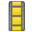

CompizConfig Einstellungs-Manager
Archivierte Anleitung
Dieser Artikel wurde archiviert, da er - oder Teile daraus - nur noch unter einer älteren Ubuntu-Version nutzbar ist. Diese Anleitung wird vom Wiki-Team weder auf Richtigkeit überprüft noch anderweitig gepflegt. Zusätzlich wurde der Artikel für weitere Änderungen gesperrt.
Anmerkung: Der Artikel wurde durch den neueren Artikel "Compiz CCSM" ersetzt. Die letzte Version dieses Artikels hier, welche im Wiki war, war für Hardy, Lucid und Maverick getestet.
Zum Verständnis dieses Artikels sind folgende Seiten hilfreich:
Mit dem erweiterten CompizConfig Einstellungs-Manager (CompizConfig Settings Manager; kurz: ccsm) lassen sich die visuellen Effekte von Compiz bis ins kleinste Detail einstellen. Das Programm ist letztendlich nicht für den Endanwender gedacht, sondern für Leute, die beispielsweise für eine Linux-Distribution vordefinierte Sets an Animationen bereitstellen wollen. Daher ist es äußerst komplex und bietet extrem viele Möglichkeiten.
Wer eine einfachere Möglichkeit sucht, die visuellen Effekte anzupassen, der sollte einen Blick in den Artikel Archiv/Desktop-Effekte werfen. Die dort genannten Programme sind schneller zu bedienen und weniger komplex.
Installation¶
Das Programm muss über das Paket
compizconfig-settings-manager (universe, [2])
 mit apturl
mit apturl
Paketliste zum Kopieren:
sudo apt-get install compizconfig-settings-manager
sudo aptitude install compizconfig-settings-manager
nachinstalliert [1] werden. Nach der Installation kann man es aus dem Menü über
"System -> Einstellungen -> CompizConfig Einstellungs-Manager" (ab Ubuntu 8.10 Intrepid Ibex)
"System -> Einstellungen -> Advanced Desktop Effect Settings" (bis Ubuntu 8.04 Hardy Heron)
starten.
Anwendung¶
Im Einstellungsmanager findet man nun eine Übersicht über alle Plugins, die für die jeweilige Installation von Compiz zur Verfügung stehen. Jede Schaltfläche steht für ein Plugin. Über den Haken vor dem Plugin kann man dieses (de-)aktivieren und über die Schaltfläche selber können weitere Konfigurationsmöglichkeiten für dieses Plugin geöffnet werden.
Übersicht¶
Hinweis:
Die folgende Tabelle beschreibt alle Plugins, die in Ubuntu 8.04 Hardy Heron enthalten sind. In neueren Versionen von Compiz oder Ubuntu können unter Umständen weitere Plugins enthalten sein.
Hier folgt eine Übersicht über die Plugins. Es wird grob erläutert, was diese Plugins jeweils bewirken und welches die übliche Tastenkombination ist, um die jeweilige Funktion auszulösen. Des weiteren findet man zu jedem Plugin jeweils einen Link auf wiki.compiz-fusion.org  . Dort sind die Plugins im Detail beschrieben. Oft gibt es Bildschirmfotos ("screenshots") oder Videos, die die Fähigkeiten des Plugins demonstrieren.
. Dort sind die Plugins im Detail beschrieben. Oft gibt es Bildschirmfotos ("screenshots") oder Videos, die die Fähigkeiten des Plugins demonstrieren.
| CompizConfig Einstellungs-Manager | ||
| Icon | Effekt | Auswirkung |
| Allgemein | ||
| General Options | Hier lassen sich umfangreiche Einstellungen rund um Compiz vornehmen. Letztendlich kann hier die Grundkonfigurationen von Compiz geändert werden. | |
| Barrierefreiheit | ||
 | Brightness and Saturation | Mittels
Strg +
Alt +  lässt sich die Farbsättigung eines Fensters ändern. Mit
⇧ +
Alt + die Helligkeit. lässt sich die Farbsättigung eines Fensters ändern. Mit
⇧ +
Alt + die Helligkeit. |
| Enhanced Zoom Desktop | Mit
Windows +
1 bis
Windows +
3 kann man in festen Schritten in das Bild hineinzoomen. Alternativ kann man mit
Windows + beliebig die Zoomgröße ändern. Das Bild folgt dabei dem Mauszeiger, wenn man diesen bewegt. | |
| Farbfilter | Der Farbfilter ermöglicht Sehbehinderten, die Bildschirmdarstellung mit bestimmten Filtern zu versehen, so dass der Kontrast für verschiedene Sehbehinderungen optimiert werden kann. Mit Windows + F aktiviert man den Farbfilter für ein Fenster, mit Windows + D für den ganzen Bildschirm. Strg + Windows + S schaltet zwischen den verschiedenen Farbfiltern um. | |
| Fensterinhalt negieren | Invertiert die Farbdarstellung eines Fensters mit Windows + N oder mittels Windows + M die Farbgebung des gesamten Bildschirms. | |
| Konzentrationshilfe | Mittels Windows + P dunkeln alle Fenster bis auf das aktive automatisch ab. So hebt sich das aktive Fenster deutlich vom Rest des Desktops ab. | |
| Magnifier | Vergrößert mittels Windows + M einen Bildschirmausschnitt unter dem Mauszeiger. Ähnlich wie man es von einem anderen Betriebsystem unter der Bezeichnung "Bildschirmlupe" kennt. | |
| Show mouse | Mittels Windows + K schwirren "Kometen" rund um den Mauszeiger, um seine Position zu verdeutlichen. Für Sehbehinderte ist diese Funktion weniger zu empfehlen. Sie zielt eher auf Show als auf Unterstützung ab. | |
| Sichtbarkeit | Aktiviert man mit Windows + O dieses Plugin, so werden Fenster im Vordergrund durchsichtig, wenn man mit der Maus über ein Fenster im Hintergrund fährt. So kann man den Inhalt eines Fensters im Hintergrund sehen, ohne den Fokus zu ändern. | |
| Arbeitsfläche | ||
| Arbeitsflächenumschalter | Dient dazu, den virtuellen Desktop über eine Tastenkombination oder eine Mausaktion wechseln zu können. In den Standardeinstellungen kann man mit dem Mausrad den Desktop wechseln, während sich der Mauszeiger über dem Desktop befindet. | |
| Clone Output | Klont das Bild eines Monitors auf einen anderen. Das Plugin eignet sich für Anwender, die mit mehreren Bildschirmen arbeiten und auf beiden Bildschirmen kurzzeitig das selbe Bild haben wollen. Drückt man
⇧ +
Windows +  , minimiert sich das Bild von Monitor A, dieses zieht man auf Monitor B und löst die Maustaste. Nun sieht man auf beiden Monitoren das gleiche Bild. , minimiert sich das Bild von Monitor A, dieses zieht man auf Monitor B und löst die Maustaste. Nun sieht man auf beiden Monitoren das gleiche Bild. | |
| Desktop Cube | Platziert die virtuellen Desktops auf die Seiten eines Würfels. Mittels Strg + Alt + ↓ wird der Würfel aufgefaltet und dieses "Band" dargestellt. Zu diesem Plugin sollte man das "Rotate Cube"-Plugin aktivieren. Erst dann kann man den Würfel drehen, so wie man es auf vielen Bildern sehen kann. | |
| Desktop Einblenden | Blendet beim Drücken des "Desktop anzeigen"-Applets im Panel alle Fenster sanft aus, anstatt die Fenster, wie im Plugin "Animationen" festgelegt, zu minimieren. | |
| Desktop Plane | Dieses Plugin ist eine Alternative zum Umschalten der virtuellen Desktops. Anstatt die einzelnen Desktops auf einen Würfel zu verteilen, werden sie auf einer Ebene ausgebreitet. Mittels der Tasten Strg + Alt + ↑ , Strg + Alt + → usw. kann man zwischen den einzelnen virtuellen Desktops umschalten. | |
| Desktop Tafel | Entspricht von der Funktionalität und der Bedienung dem "Desktop Plane"-Plugin bietet aber weitere Funktionen. So wird beim Umschalten zwischen den virtuellen Desktops eine kleine Animation dargestellt, die auch eine "Live Vorschau" der einzelnen Desktops enthalten kann. Nurmehr in Hardy Heron 8.04 vorhanden. | |
| Expo | Zoomt mittels Windows + E aus dem Bildschirm heraus und stellt alle virtuellen Desktops in einer Übersicht dar. Klickt man auf einen der Desktops doppelt, so wechselt man auf diesen. Zusätzlich können Fenster zwischen den einzelnen Desktops verschoben werden. Dieses Plugin sollte man nicht mit "Scale" verwechseln, wenn man eine Funktionalität wie "Exposé" auf Mac OS X sucht. | |
| Rotate Cube | Die Tastenkombinationen
Strg +
Alt +
← bzw.
Strg +
Alt +
→ drehen den Würfel jeweils eine Arbeitsfläche weiter. Hält man dabei zusätzlich noch die
⇧ Taste gedrückt, so wird das aktuelle Fenster auf die neue Arbeitsfläche mitgenommen. Über
Strg +
Alt + aktiviert man den "Freecube". Hier kann man mit der Maus den Würfel frei drehen. | |
| Widget Layer | Dieses Plugin behandelt Widgets wie Screenlets oder GDesklets besonders. So können diese Fenster mittels F9 ein- bzw. ausgeblendet werden. Das Plugin selber kann keine Widgets bereitstellen, es aktiviert nur die besondere Behandlung von "Widget-Fenstern". | |
| Zeige Desktop | Klickt man im Panel auf das "Desktop zeigen" Applet im Panel, so werden die Fenster nicht einfach in die Taskleiste minimiert, sondern fahren in die jeweils nächste Ecke des Bildschirm und werden aus dieser heraus auch wiederhergestellt. | |
| Effekte | ||
| 3D-Fenster | Hebt Fenster bei aktiviertem "Desktop Cube"-Plugin vom Würfel ab. Fenster im Vordergrund werden weiter abgehoben als Fenster im Hintergrund. | |
| Animationen | Animationen beim Aufrollen, Minimieren, Schließen und Öffnen von Fenstern. Vom einfachen Gleiten vom und ins Panel bis zu explodierenden Fenstern, ist hier alles machbar. | |
| Bewegungsunschärfe | Ist dieses Plugin aktiviert und mit Strg + F12 eingeschaltet, werden Fenster, die mit der Maus über den Bildschirm geschoben werden, unscharf gezeichnet. | |
| Blur Windows | Versieht Fenster im Hintergrund mit einem Weichzeichner oder zeichnet transparente Elemente wie Fensterleisten von inaktiven Fenstern weich, was allerdings wegen eines Bugs aktuell nicht geht. (Bug scheint behoben: This bug was fixed in the package compiz - 1:0.8.3+git20091005-0ubuntu5 ) | |
| Cube Gears | Zeichnet die bekannten rotierenden Zahnräder in einen transparenten Würfel. Dazu muss im "Desktop Cube"-Plugin die Transparenz aktiviert werden. | |
| Fading Windows | Blendet Fenster beim Minimieren, Schließen oder Öffnen sanft ein bzw. aus. Zusätzlich können Ereignisse, die einen "Beep" auslösen (also z.b. die Vervollständigung von Dateinamen bzw. Pfaden in einem Terminal mittels Tab ⇆ -Taste), als kurzes Aus- und wieder Eindimmen dargestellt werden. | |
| Fokusverlauf | Verändert die Sichtbarkeit, Sättigung und Helligkeit der Fenster, je nachdem wann sie das letzte mal fokussiert wurden. Je länger ein Fenster nicht mehr aktiviert wurde, desto transparenter wird es. | |
| Login/Logout | Dimmt den Bildschirm beim Ein- bzw. Ausloggen ab. | |
| Minimize Effect | Lässt Fenster beim Minimieren bzw. Wiederherstellen aus den Panel sanft in bzw. aus dem Panel gleiten. Das Plugin steht in Konkurrenz zum "Animationen"-Plugin. | |
| Reflektionen | Zeichnet Reflexionen in die Fensterleisten inaktiver Fenster bzw. auch in transparente Fenster wie z.b. Terminals, bei denen die Transparenz aktiviert wurde. | |
| Water Effect | Zeichnet, während man mit gedrückten Strg + Windows Tasten mit der Maus über den Bildschirm fährt, eine Animation auf den Bildschirm. Dies sieht aus, als ob man mit einem Finger durch Wasser fährt. Zusätzlich lässt die Kombination ⇧ + F9 es auf dem Bildschirm regnen, und ⇧ + F8 aktiviert einen Scheibenwischer. | |
| Windows Decoration | Zeigt die Fensterdekorationen, also die Rahmen um Fenster mit den Schaltflächen zum Minimieren, Maximieren oder Schließen an. Dieses Plugin sollte also nicht deaktiviert werden. In den Einstellungen kann man den Schattenwurf und Transparenz konfigurieren. | |
| Wobbly Windows | Lässt Fenster beim Verschieben "wabbeln" und Fenster am Rand des Desktops oder an anderen Fenster einrasten, so dass man Fenster einfach aneinander anordnen kann, ohne sie zu überlappen. | |
| Würfelreflektionen | Zeichnet einen Boden mit Reflexion unter den Würfel. Dreht man den Würfel, so zeichnen sich Fenster und Würfel auf der Reflexion ab. | |
| Zeichnet Feuer auf dem Bildschirm | Hält man die Tasten ⇧ + Windows gedrückt und fährt mit gedrückter linker Maustaste über den Bildschirm, so zeichnet man mit Feuer auf dem Bildschirm. Das Feuer lodert so lange weiter, bis man mit der Tastenkombination ⇧ + Windows + C das Feuer auslöscht. | |
| Sonstiges | ||
| Annotate | Ermöglicht das Zeichnen auf dem Bildschirm, um beispielsweise bei einer Präsentationen Elemente auf dem Desktop zu markieren. Während man die Tasten
Alt +
Windows + drückt, kann man mit der Maus auf den Bildschirm zeichnen. Drückt man
Alt +
Windows +  , so kann man das Gezeichnete radieren. Die Tasten
Alt +
Windows +
K löschen alles Gezeichnete. , so kann man das Gezeichnete radieren. Die Tasten
Alt +
Windows +
K löschen alles Gezeichnete. | |
| Fenster-Vorschaubilder | Fährt man mit der Maus über minimierte Fenster im unteren Panel, so wird nun ein Vorschaubild des Fensters dargestellt - ähnlich wie bei Windows Vista. Leider wird jedoch weiterhin ein gelber "Tooltip" mit dem Fenstertitel angezeigt, dies lässt sich bisher nicht deaktivieren. Soll zusätzlich unter dem Vorschaubild noch der Titel des Fensters eingeblendet werden, muss das Plugin "Text" aktiv sein. | |
| Ladebildschirm | Zeigt beim Starten der GNOME-Sitzung, also kurze Zeit nach dem Anmelden ("login"), einen "splash screen" mit dem animierten Compiz-Fusion-Logo an. | |
| Leistungstest | Zeigt, nachdem der Leistungstest mit der Tastenkombination Windows + F12 aktiviert wurde, den "Compiz Benchmark" mit der Anzahl der gerade gezeichneten Frames pro Sekunde. | |
| Screenshot | Hält man die Windows gedrückt und zieht mit der linken Maustaste einen Rahmen auf, so wird der selektierte Bereich als screenshotX.png auf dem Desktop abgespeichert. | |
| Bildverarbeitung | ||
| JPEG | Internes Plugin zum Laden von .jpg-Grafiken für Texturen. So können beispielsweise die "Cube Caps" mit Bildern versehen werden. | |
| Png | Internes Plugin zum Laden von .png-Grafiken. | |
| Svg | Internes Plugin zu Laden von .svg-Grafiken. | |
 | Text | Internes Plugin zum Rendern von Text. Wird beispielsweise für das Plugin "Scale-Erweiterungen" oder "Fenster-Vorschaubilder" benötigt, um den eingeblendeten Text anzuzeigen. |
| Werkzeuge | ||
| Abhilfen | Verschiedene "Workarounds", also Abhilfen, für diverse Probleme, die im Zusammenspiel mit Compiz entstehen können. | |
| Absturzverwalter | Sollte Compiz abstürzen, so werden diverse Log-Dateien nach /tmp geschrieben und bei Bedarf auch ein anderer Fenstermanager gestartet. | |
| Cube Caps | Zeichnet auf die "Cube Caps", also die Kopf- und Grundflächen des Würfels beim Drehen Bilder bzw. eine transparente farbige Fläche. | |
| Dbus | Internes Plugin, um die dem D-Bus-System zu kommunizieren. | |
| Error Notifications | Fehler oder andere Nachrichten von Compiz werden über den Benachrichtigungsdienst ausgegeben. | |
| Fenster-Skalier-Informationen | Blendet beim Skalieren, also beim Vergrößern oder Verkleinern von Fenstern, Informationen über die Größe des Fensters in Pixeln ein. | |
| GLib | Internes Plugin für GLib-Unterstützung. | |
| Inotify | Internes Plugin für Compiz. Ermöglicht die Benachrichtigung des Systems an Compiz mit Inotify bei Änderungen an Dateien. | |
| Mouse position polling | Internes Plugin für Compiz, übergibt die Position der Maus an andere Plugins. | |
| Regex Matching | Internes Plugin für Compiz zum Auswerten von regulären Ausdrücken. | |
| Scale Erweiterung | Zusätzliche Funktionen für das "Scale"-Plugin. Fenster können im Scale-Modus über die mittlere Maustaste herangezoomt oder über die rechte Maustaste geschlossen werden. | |
| Scale-Fenstertitelfilter | Filtert Fenster im Scale-Modus durch eine Texteingabe nach ihrem Fenstertitel. Gibt man beispielsweise "Terminal" ein, so werden nur die Terminalfenster auf dem Bildschirmgezeigt. | |
| Session Management | Speichert die Position und Größe von Fenstern beim Beenden einer Sitzung ab. Meldet man sich neu an die Desktopumgebung an, so sollten Fenster wieder an derselben Stelle geöffnet werden. | |
| Userspace File System | Stellt eine Schnittstelle zur Verwendung des Filesystem im USErspace, kurz FUSE, zur Verfügung. | |
|  | Video Playback | Ermöglicht, Videos über die OpenGL-Funktionen von Compiz auszugeben. Dadurch kann man beispielsweise die Zoom-Funktionen von Compiz nutzen, wobei das Video weiterhin scharf dargestellt wird. Allerdings unterstützt noch kein Videoplayer diese Funktionalität. Weitere Informationen zu dieser Funktion findet man in diesem Blog. |
| Fensterverwaltung | ||
| Application Switcher | Zeigt beim Drücken der Tastenkombination Alt + Tab ⇆ den Anwendungsumschalter mit einer Vorschau an. | |
| Fensterpositionierung | Richtet mittels Windows + 1 bis Windows + 9 (Wobei die Zahlen für die Zahlen auf dem Ziffernblock stehen) Fenster links-oben, links-mittig, usw. am Bildschirm aus. Windows + 0 bewegt das Fenster wieder zur ursprünglichen Position. | |
| Grid | Ordnet Fenster in einem Imaginären Raster an. Zum Beispiel wird ein Fenster, wenn man Strg + Alt + 7 (auf dem Nummernblock) drückt, auf die rechte Hälfte des Bildschirms vergrößert. Das Plugin erinnert an Windows' "Aero Snap". | |
| Gruppiere und Tabbe Fenster | Mit der Tastenkombination Windows + G öffnet man eine Gruppe, nun kann man mittels Windows + S diverse Fenster auswählen, diese glühen dann auf. Mittels Windows + T "tabbt" man nun diese Gruppe, d.h. alle Fenster dieser Gruppe werden auf eines minimiert. Mittels Windows + ← bzw. Windows + → schaltet man zwischen den einzelnen Tabs hin und her. Windows + U löst dann die Gruppierung wieder auf. | |
| Maximumize | Maximiert mittels Windows + M ein Fenster auf die maximal mögliche Größe, ohne weitere Fenster auf dem Desktop zu überdecken. | |
| Place Windows | Verschiebt Fenster an eine definierte Position auf dem Bildschirm. So lässt sich beispielsweise ein Programm immer an derselben Stelle oder auf einem bestimmten virtuellen Desktop starten. | |
| Regeln für Fenster | Bestimmt individuell festlegbare Regeln für einzelne Fenster. So kann man festlegen, dass bestimmte Fenster nicht in der Taskleiste erscheinen oder dass sie nicht skalierbar sein dürfen usw.
Das spezifische Fenster identifiziert man am besten mit dem Befehlxprop|grep WM_CLASS|cut -d\" -f4 | |
| Resize Window | Ermöglicht, dass Fenster in ihrer Größe geändert werden können. In den Eigenschaften lassen sich verschiedene Modi für die Größenänderung einstellen. | |
| Ring-Anwendungs-Umschalter | Mittels Windows + Tab ⇆ kann man zwischen den geöffneten Fenstern wechseln. Die Fenster werden dabei in einem dreidimensionalen Ring dargestellt. | |
| Scale | Verkleinert über die Tastenkombination ⇧ + Alt + ↑ alle geöffneten Fenster und stellt sie ohne Überlappung auf dem Desktop dar. Der Effekt ist durch Mac OS X unter dem Namen Exposé bekannt. | |
| Shelf | Verkleinert Fenster, so dass sie weniger Platz auf dem Bildschirm benötigen. Mit Windows + L wird das Fenster kleiner; drückt man die Kombination erneut, wird das Fenster wieder kleiner. Drückt man die Tastenkombination ein drittes Mal, so wird das Fenster wieder auf die Normalgröße vergrößert. Alternativ kann man mit Windows + P das Fenster auf 1/2, 1/3 oder 1/6 der Größe ändern. Letztendlich kann man auch mit gedrückten Alt + Windows Tasten und dem Mausrad die Größe eines Fensters beliebig verkleinern. | |
| Shift Switcher | Noch ein Ersatz für den herkömmlichen Anwendungsumschalter. Mit Windows + Tab ⇆ schalter man zwischen den einzelnen geöffneten Fenstern um. Der Effekt erinnert an "Cover Flow" auf iPod und Mac. | |
| Snapping Windows | Lässt Fenster beim Verschieben an anderen Fenstern oder Bildschirmkanten einrasten, so dass Fenster ohne eine Überlappung präzise aneinander ausgerichtet werden können. Möchte man ein Fenster ohne diese Funktion verschieben, so kann man die ⇧ drücken. Solange die Taste gehalten wird, rastet das Fenster nicht ein. | |
| Zusätzliche Fenstermanager-Aktionen | Aktiviert weitere Funktionen des Fenstermanagers. Fenster können auch ohne eigene Vollbildfunktion auf den gesamten Bildschirm vergrößert werden, so dass sie beispielsweise die Panels überdecken usw. | |
| Ohne Kategorie | ||
| Move Windows | Ermöglicht das Verschieben von Fenstern. In den Einstellungen des Plugins kann man beispielsweise die Transparenz des Fensters während des Verschiebens bestimmen oder das Verschieben in Y-Richtung erlauben (über das Panel hinaus verschieben; dies ist praktisch bei kleinen Bildschirmen) | |
| Zoom Desktop | Hält man die
Windows gedrückt, kann man mittels des Mausrades in den Bildschirm hinein- und wieder herauszoomen. Mit
Windows + kann man einen Bildschirmausschnitt auswählen, der vergrößert werden soll. Während das Bild vergrößert ist, kann man nicht mit den Fenstern interagieren. Sollte man während des Zooms noch Eingaben tätigen wollen, so sollte man das Plugin "Enhanced Zoom Desktop" nutzen. | |
Anmerkung: Im Programm wird die Windows als "Super-Taste" beschrieben.
Problemlösung¶
Plugins lassen sich nicht aktivieren oder deaktivieren¶
Gelegentlich kommt es vor, dass sich Plugins nicht aktivieren oder deaktivieren lassen, weil die Checkboxen dafür ausgegraut sind. In diesem Fall sollte man unter „Einstellungen -> Pluginliste“ kontrollieren, dass der Haken für „Automatische Pluginsortierung“ aktiviert ist.
Links¶
How to: Configuring conditional window transparency in Compiz
Youtube Video: Compiz Fusion - A Quick Demo
(06/2007, wurde immer mal wieder aktualisiert)
- Erstellt mit Inyoka
-
 2004 – 2017 ubuntuusers.de • Einige Rechte vorbehalten
2004 – 2017 ubuntuusers.de • Einige Rechte vorbehalten
Lizenz • Kontakt • Datenschutz • Impressum • Serverstatus -
Serverhousing gespendet von